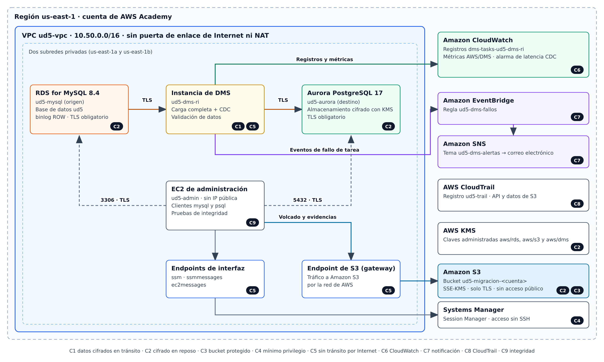

Práctica guiada: migración de MySQL a Aurora PostgreSQL con AWS DMS¶
- Módulo: Administración de bases de datos y almacenamiento en la nube
- Curso de especialización: Recursos y Servicios en la Nube
- Plataforma: AWS Academy Learner Lab · Consola de administración de AWS
- Duración estimada: 3 horas y 30 minutos, de las que aproximadamente 45 minutos corresponden a tiempos de aprovisionamiento
1. Introducción¶
Una migración heterogénea traslada datos entre motores distintos y exige resolver tres cuestiones: la conversión del esquema, el traslado de los datos y la demostración de que el resultado es íntegro. En esta práctica se migra la base de datos ud5, almacenada en MySQL 8.4, a un clúster de Amazon Aurora compatible con PostgreSQL mediante AWS Database Migration Service (DMS).
La migración combina una carga completa con la captura de datos de cambios (CDC), de modo que el origen puede seguir admitiendo escrituras hasta el momento de la conmutación. Todo el proceso se realiza en una red privada y debe satisfacer la lista de comprobación de seguridad y operación incluida en el apartado 7.
Danger
Esta práctica no se puede realizar. Se ha intentado eliminar la necesidad de servicios y permisos al mínimo pero aún así llegamos a varios puntos en los que necesitamos permisos que son imposibles de un obtener en un LearnerLab y que hacen que la práctica sea irrealizable en este entorno.
- En el paso 7 no podemos crear la notificación de errores por falta de permisos.
- En el paso 15 da un error al generar el grupos de subredes DMS necesario para comenzar el trabajo.
2. Objetivos¶
Al finalizar la práctica, el alumnado será capaz de:
- Desplegar una red privada para una migración sin tránsito por Internet.
- Preparar MySQL y PostgreSQL con usuarios de privilegios mínimos.
- Configurar y ejecutar una tarea de DMS con carga completa, CDC y validación.
- Migrar manualmente los objetos que DMS no traslada.
- Supervisar y auditar la migración con CloudWatch, EventBridge, SNS y CloudTrail.
- Verificar la integridad final mediante recuentos y sumas de comprobación.
3. Requisitos previos¶
- Acceso a un AWS Academy Learner Lab iniciado, con crédito suficiente.
- Región us-east-1 (N. Virginia) en todos los pasos.
- Una dirección de correo electrónico accesible para confirmar la suscripción de SNS.
- El archivo
00-ud5.sqly la carpetascripts/que acompaña a este enunciado.
Advertencia: inicie la práctica con la sesión del laboratorio recién renovada. Si la sesión expira durante la replicación, los recursos pueden detenerse y será necesario reanudar o reiniciar la tarea.
Los nombres de los elementos de la consola se indican en inglés porque las traducciones pueden variar. Las contraseñas deben contener solo letras y números; no las incluya en la memoria.
4. Base de datos de origen¶
El volcado contiene 9 tablas InnoDB y 2.142 filas, sin vistas, disparadores ni rutinas.
| Tabla | Filas | Particularidad para la migración |
|---|---|---|
aux_countries |
246 | INT UNSIGNED y AUTO_INCREMENT |
aux_rol |
3 | Texto con caracteres no ASCII y saltos de línea |
aux_rol_trabajador |
6 | AUTO_INCREMENT |
categoria |
15 | Clave ajena reflexiva |
log |
3 | Clave primaria compuesta |
producto |
1.023 | INT UNSIGNED, DECIMAL y clave UNIQUE |
proveedor |
101 | Clave primaria VARCHAR |
trabajadores |
742 | TINYINT(1) y columnas con mayúsculas |
usuario_sistema |
3 | DATETIME y clave UNIQUE |
DMS traslada datos, pero no replica por sí mismo todo el modelo relacional: no migra el atributo AUTO_INCREMENT y tampoco garantiza el orden de carga de las tablas. Por ello, se seguirá esta estrategia:
| Momento | Objetos | Responsable |
|---|---|---|
| Antes de la carga | Esquema, tablas y claves primarias | 02-destino-esquema.sql |
| Durante la carga | Filas y cambios | Tarea de DMS en modo Do nothing |
| Después de la conmutación | UNIQUE, índices, claves ajenas y secuencias |
03-destino-postcarga.sql |
Se opta por un script revisable, en lugar de DMS Schema Conversion, porque esta función no incluye MySQL 8.4 entre sus orígenes documentados y necesita roles adicionales que no pueden crearse con normalidad en el laboratorio.
5. Arquitectura¶

Figura 1. Arquitectura final. Las etiquetas C1 a C9 remiten a los controles de la lista de comprobación.
6. Interpretación de la lista de comprobación en esta arquitectura¶
| Control | Aplicación en la práctica |
|---|---|
| Cifrado en tránsito | TLS con validación del certificado (verify-full) en ambos endpoints de DMS. |
| Cifrado en reposo | SSE-S3 y SSE-KMS son modalidades propias de Amazon S3. El destino Aurora usa cifrado de almacenamiento con KMS; el bucket usa SSE-KMS. |
| Bucket protegido | El bucket del proyecto y el de CloudTrail rechazan peticiones sin TLS y bloquean el acceso público. |
| Mínimo privilegio | Se aplica a usuarios de base de datos, grupos de seguridad y roles de servicio de DMS. LabRole se analiza como limitación del laboratorio. |
| Sin tránsito por Internet | La VPC no tiene puerta de enlace de Internet ni NAT. El acceso a S3 y Systems Manager se realiza mediante endpoints de VPC. |
Parte I. Red privada¶
Paso 1. Comprobar los roles de DMS¶
- Abra IAM > Roles y busque
dms-vpc-roleydms-cloudwatch-logs-role. - Si faltan, cree cada rol mediante Create role > AWS service > DMS y adjunte, respectivamente,
AmazonDMSVPCManagementRoleyAmazonDMSCloudWatchLogsRole. - Si IAM deniega la operación, continúe con los pasos siguientes: la consola de DMS puede intentar crearlos. Si tampoco lo consigue, comuníquelo al profesorado antes de crear recursos de coste elevado.
Estos roles deben conservar exactamente esos nombres, porque DMS los busca por nombre.
Este paso no funciona
Paso 2. Crear la VPC¶
- Abra VPC > Create VPC > VPC and more y configure:
| Parámetro | Valor |
|---|---|
| Name tag auto-generation | ud5 |
| IPv4 CIDR block | 10.50.0.0/16 |
| Availability Zones | 2 |
| Public subnets | 0 |
| Private subnets | 2 |
| NAT gateways | None |
| VPC endpoints | S3 Gateway |
| DNS hostnames y DNS resolution | Activados |
- Cree la VPC y compruebe, en Your VPCs > Resource map, que dispone de dos subredes privadas y ninguna puerta de enlace de Internet.
- Renombre la VPC a
ud5-vpcsi la consola le ha asignado otro nombre.
Paso 3. Crear los grupos de seguridad¶
En VPC > Security groups, cree estos grupos en ud5-vpc. Cree primero ud5-admin-sg y ud5-dms-sg, ya que los demás hacen referencia a ellos.
| Grupo | Regla de entrada | Origen |
|---|---|---|
ud5-admin-sg |
Ninguna | — |
ud5-dms-sg |
Ninguna | — |
ud5-mysql-sg |
TCP 3306 | ud5-admin-sg y ud5-dms-sg |
ud5-aurora-sg |
TCP 5432 | ud5-admin-sg y ud5-dms-sg |
ud5-endpoints-sg |
TCP 443 | ud5-admin-sg |
Paso 4. Crear los endpoints de interfaz¶
Cree tres endpoints en VPC > Endpoints > Create endpoint, con AWS services, la VPC ud5-vpc, ambas subredes, el grupo ud5-endpoints-sg y Enable DNS name activado:
com.amazonaws.us-east-1.ssmcom.amazonaws.us-east-1.ssmmessagescom.amazonaws.us-east-1.ec2messages
Espere a que todos alcancen el estado Available.
Parte II. Almacenamiento, auditoría y alertas¶
Paso 5. Crear y proteger el bucket¶
- Obtenga el identificador de la cuenta en el menú superior derecho.
- En S3 > Create bucket, cree
ud5-migracion-<id-cuenta>con estos valores:
| Parámetro | Valor |
|---|---|
| Bucket type | General purpose |
| Object Ownership | ACLs disabled |
| Block all public access | Activado |
| Bucket Versioning | Enable |
| Default encryption | SSE-KMS con la clave administrada aws/s3 |
| Bucket Key | Enable |
- En Permissions > Bucket policy, pegue la política siguiente, sustituyendo
NOMBRE_DEL_BUCKET:
{
"Version": "2012-10-17",
"Statement": [
{
"Sid": "DenegarTransporteSinTLS",
"Effect": "Deny",
"Principal": "*",
"Action": "s3:*",
"Resource": [
"arn:aws:s3:::NOMBRE_DEL_BUCKET",
"arn:aws:s3:::NOMBRE_DEL_BUCKET/*"
],
"Condition": {
"Bool": { "aws:SecureTransport": "false" }
}
}
]
}
- Descargue en su equipo el paquete de certificados de la región:
https://truststore.pki.rds.amazonaws.com/us-east-1/us-east-1-bundle.pem. - Suba al bucket
00-ud5.sqlyus-east-1-bundle.pembajo el prefijoentrada/, y el contenido descripts/bajo el prefijoscripts/.
Paso 6. Activar CloudTrail¶
- Abra CloudTrail > Trails > Create trail y configure:
| Parámetro | Valor |
|---|---|
| Trail name | ud5-trail |
| Storage location | Create new S3 bucket |
| Log file SSE-KMS encryption | Desactivado (el bucket conserva su cifrado predeterminado) |
| Log file validation | Enabled |
| CloudWatch Logs | Desactivado |
| Log events | Management events y Data events |
| API activity | Read y Write |
| Registro recursivo | Deshabilitadao |
| Entrega de notificación SNS | Deshabilitado |
- En Data events, seleccione S3, use una plantilla personalizada y limite el registro a
resources.ARNque empiece porarn:aws:s3:::ud5-migracion-<id-cuenta>/. - Cree el registro. A continuación, en el bucket que ha creado CloudTrail, compruebe que Block all public access está activado y añada la instrucción
DenegarTransporteSinTLSa la política existente, sin eliminar las instrucciones de CloudTrail.
Si el laboratorio no permite crear el registro, conserve como evidencia Event history, que registra los eventos de administración sin necesidad de un registro de seguimiento, y anote la limitación en la memoria.
Paso 7. Crear la notificación de errores¶
- En SNS > Topics, cree el tema estándar
ud5-dms-alertas. - Cree una suscripción Email y confírmela desde su correo.
- En Access policy, añada esta instrucción a la lista
Statement, sustituyendo el ARN del tema:
{
"Sid": "PermitirEventBridge",
"Effect": "Allow",
"Principal": { "Service": "events.amazonaws.com" },
"Action": "sns:Publish",
"Resource": "ARN_DEL_TEMA"
}
- En EventBridge > Buses de eventos > default> Rules > Create rule, cree
ud5-dms-fallosen el busdefault, de tipo Rule with an event pattern, con este patrón personalizado:
{
"source": ["aws.dms"],
"detail-type": ["DMS Replication Task State Change"],
"detail": {
"category": ["Failure"]
}
}
- Seleccione como destino el tema
ud5-dms-alertasy cree la regla.
Falla por falta de permisos
Parte III. Bases de datos¶
Paso 8. Crear el grupo de subredes y los parámetros de MySQL¶
- En RDS > Subnet groups, cree
ud5-db-subnetsenud5-vpccon las dos subredes privadas. - En RDS > Parameter groups, cree
ud5-mysql84-params, con motor MySQL Community y familiamysql8.4. - Edite el grupo y establezca:
| Parámetro | Valor | Finalidad |
|---|---|---|
binlog_format |
ROW |
Captura de cambios por DMS |
binlog_row_image |
full |
Imagen completa de cada fila |
require_secure_transport |
1 |
Rechazo de conexiones sin TLS |
Paso 9. Crear la instancia de origen¶
En RDS > Databases > Create database, elija Full configuration y MySQL:
| Parámetro | Valor |
|---|---|
| Engine version | MySQL 8.4 (última versión secundaria ofrecida) |
| Template | Dev/Test |
| Deployment | Single-AZ, una instancia |
| DB instance identifier | ud5-mysql |
| Master username | admin |
| Credentials | Self managed |
| Instance class | db.t3.small |
| Storage | General Purpose, 20 GiB, sin autoescalado |
| VPC y DB subnet group | ud5-vpc y ud5-db-subnets |
| Public access | No |
| VPC security group | ud5-mysql-sg (retire default) |
| Initial database name | ud5 |
| DB parameter group | ud5-mysql84-params |
| Automated backups | Activados, retención de 1 día |
| Encryption | Activado, clave aws/rds |
| Enhanced Monitoring | Desactivado |
| Deletion protection | Desactivado |
Las copias de seguridad automáticas no son opcionales: en RDS for MySQL activan el registro binario que necesita CDC.
Paso 10. Crear el clúster de destino¶
En Create database, elija Aurora (PostgreSQL Compatible):
| Parámetro | Valor |
|---|---|
| Engine version | Aurora PostgreSQL 17 (17.4 o posterior) |
| Template | Dev/Test |
| DB cluster identifier | ud5-aurora |
| Master username | adminud5 |
| Credentials | Self managed |
| Cluster storage | Aurora Standard |
| Instance class | Burstable, db.t3.medium |
| Aurora Replica | No crear |
| VPC y DB subnet group | ud5-vpc y ud5-db-subnets |
| Public access | No |
| VPC security group | ud5-aurora-sg (retire default) |
| Initial database name | ud5 |
| Encryption | Activado, clave aws/rds |
| Enhanced Monitoring y Performance Insights | Desactivados |
| Deletion protection | Desactivado |
Anote el writer endpoint del clúster y el endpoint de ud5-mysql.
Paso 11. Crear la instancia de administración¶
- En EC2 > Launch instance, cree
ud5-admincon Amazon Linux 2023, tipot3.microy par de claves vockey. - En la configuración de red, seleccione
ud5-vpc, una subred privada, Auto-assign public IP: Disable y el grupoud5-admin-sg. - En Advanced details > IAM instance profile, elija
LabInstanceProfile. - Cuando la instancia supere las comprobaciones, conéctese con Connect > Session Manager.
- Ejecute, los siguientes comandos sustituyendo los valores entre ángulos:
sudo -iu ec2-user
cat >> ~/.bashrc <<'FIN'
export AWS_DEFAULT_REGION=us-east-1
export BUCKET=ud5-migracion-<id-cuenta>
export MYSQL_HOST=<endpoint-de-ud5-mysql>
export AURORA_HOST=<writer-endpoint-de-ud5-aurora>
export CA=$HOME/ud5/us-east-1-bundle.pem
alias my='mysql -h $MYSQL_HOST -u admin -p --ssl-ca=$CA --ssl-verify-server-cert --default-character-set=utf8mb4'
alias pg='psql "host=$AURORA_HOST port=5432 dbname=ud5 user=adminud5 sslmode=verify-full sslrootcert=$CA"'
FIN
source ~/.bashrc
sudo dnf install -y mariadb105 postgresql17
mkdir -p ~/ud5/evidencias && cd ~/ud5
aws s3 cp s3://$BUCKET/entrada/ . --recursive
aws s3 cp s3://$BUCKET/scripts/ . --recursive
Si
postgresql17no está disponible, consultednf list 'postgresql1*'e instale la versión más reciente. La instalación funciona sin NAT porque los repositorios de Amazon Linux 2023 se sirven desde S3, accesible por el endpoint de puerta de enlace.
Tip
Si al ejecutar source ~/.bashrc tenemos un error de sintaxis o no se generan las variables, tendremos que editar manualmente el fichero ~/.bashrc
- Compruebe el aislamiento de la red y la protección del bucket:
curl -m 5 -I https://aws.amazon.com
aws s3 ls s3://$BUCKET --endpoint-url http://s3.us-east-1.amazonaws.com
El primer comando debe agotar el tiempo de espera, y el segundo debe devolver AccessDenied.
Paso 12. Cargar y preparar el origen¶
Vamos a crear un usuario en mysql para migrar los datos. Para ello primero crearemos una variable de sesión llamada CLAVE_DMS que será la clave de acceso del usuario creado. Puedes ver los comandos que se ejecutan si revisas el fichero 00-fuente-usuario-dms.sql
Ejecute este paso y los siguientes desde ~/ud5, en la misma sesión si es posible, ya que CLAVE_DMS no se conserva entre sesiones.
-- =====================================================================
-- 00-fuente-usuario-dms.sql
-- Se ejecuta en RDS for MySQL como admin. Sustituya <CLAVE_DMS>.
-- =====================================================================
CREATE USER 'dms_user'@'10.50.%' IDENTIFIED BY '<CLAVE_DMS>' REQUIRE SSL;
GRANT SELECT ON ud5.* TO 'dms_user'@'10.50.%'; -- carga completa
GRANT REPLICATION CLIENT, REPLICATION SLAVE ON *.* TO 'dms_user'@'10.50.%'; -- CDC
-- Conserva los registros binarios durante 24 horas para la replicación.
CALL mysql.rds_set_configuration('binlog retention hours', 24);
CALL mysql.rds_show_configuration;
Note
Recuerda que my es un comando que creamos en el paso 11 que equivale a:
mysql -h $MYSQL_HOST -u admin -p --ssl-ca=$CA --ssl-verify-server-cert --default-character-set=utf8mb4
pg
La cuenta dms_user solo se admite desde la VPC y exige TLS. Sus privilegios son los mínimos necesarios:
| Privilegio | Justificación |
|---|---|
SELECT sobre ud5.* |
Lectura de la carga completa |
REPLICATION CLIENT y REPLICATION SLAVE |
Lectura del registro binario para CDC |
Cada ejecución de my y pg solicita la contraseña correspondiente.
Paso 13. Preparar el destino¶
Vamos a preparar el destino postgres y a crear las tablas en el esquema destino.
-- =====================================================================
-- 01-destino-preparacion.sql
-- Se ejecuta en Aurora PostgreSQL, base de datos ud5, como adminud5.
-- Sustituya :'clave_dms' mediante psql -v (véase el enunciado).
-- =====================================================================
CREATE SCHEMA IF NOT EXISTS ud5 AUTHORIZATION adminud5;
CREATE ROLE dms_target LOGIN PASSWORD :'clave_dms';
-- Permisos mínimos de DMS sobre el destino.
GRANT CONNECT ON DATABASE ud5 TO dms_target;
GRANT CREATE ON DATABASE ud5 TO dms_target; -- esquema de control awsdms_control
GRANT USAGE, CREATE ON SCHEMA ud5 TO dms_target;
-- Permite a adminud5 consultar el esquema awsdms_control, propiedad de dms_target.
GRANT dms_target TO adminud5;
La sesión debe indicar ssl = t. El destino usa BIGINT para INT UNSIGNED, porque el rango de un INTEGER de PostgreSQL es insuficiente, y SMALLINT para TINYINT(1), con objeto de conservar valores idénticos durante la validación.
Ahora vamos a comprobar que el sistema rechaza las conexiones sin ssl:
El resultado debería ser un error FATAL similar a este:
Info
En esta práctica utilizamos el script 02-destino-esquema para generar las tablas destino en el sistema Aurora Postgres.
En un entorno real podríamos usar DMS Schema Conversion para convertir el esquema MySQL a un esquema Aurora Postgres.
En esta práctica no usaremos esta herramienta porque necesitaríamos un perfil de instancia, proveedores de datos, un proyecto de migración y credenciales en Secrets Manager, además de sus permisos. Lo cual añade una dependencia de ciertos roles de los que no disponemos en un Learner Lab.
Paso 14. Registrar la línea base¶
my -N -B ud5 < 04-integridad-mysql.sql | LC_ALL=C sort > evidencias/base-mysql.tsv
cat evidencias/base-mysql.tsv
El resultado debe mostrar las 9 tablas y los recuentos del apartado 4.
Parte IV. Configuración de DMS¶
Paso 15. Crear los recursos de replicación¶
- En DMS > Subnet groups, cree
ud5-dms-subnetsenud5-vpccon ambas subredes. - En Provisioned instances, cree la instancia:
| Parámetro | Valor |
|---|---|
| Name | ud5-dms-ri |
| Instance class | dms.t3.medium |
| Engine version | La predeterminada, siempre 3.5.4 o superior |
| High Availability | Dev or test workload (Single-AZ) |
| Allocated storage | 50 GiB |
| Replication subnet group | ud5-dms-subnets |
| Public accessible | Desactivado |
| VPC security group | ud5-dms-sg |
| AWS KMS key | aws/dms |
- En Certificates > Import certificate, importe
us-east-1-bundle.pemcon el identificadorrds-us-east-1.
Paso 16. Crear los endpoints¶
Cree dos endpoints en DMS > Endpoints:
| Parámetro | Origen | Destino |
|---|---|---|
| Endpoint type | Source endpoint | Target endpoint |
| Endpoint identifier | ud5-fuente-mysql |
ud5-destino-aurora |
| Source/Target engine | MySQL | Amazon Aurora PostgreSQL |
| Access to endpoint database | Provide access information manually | Provide access information manually |
| Server name | Endpoint de ud5-mysql |
Writer endpoint de ud5-aurora |
| Port | 3306 | 5432 |
| Secure Socket Layer (SSL) mode | verify-full |
verify-full |
| CA certificate | rds-us-east-1 |
rds-us-east-1 |
| User name | dms_user |
dms_target |
| Database name | — | ud5 |
Antes de guardar cada endpoint, ejecute Test endpoint connection con ud5-dms-ri. Ambas pruebas deben finalizar como successful.
Paso 17. Probar la notificación de errores¶
Se creará una tarea que falla deliberadamente al no encontrar ninguna tabla.
- En Database migration tasks > Create task, configure
ud5-prueba-fallocon la instancia y los endpoints anteriores, Migrate existing data y Do nothing. - En Table mappings, abra el editor JSON y pegue:
{
"rules": [
{
"rule-type": "selection",
"rule-id": "1",
"rule-name": "tabla-inexistente",
"object-locator": { "schema-name": "ud5", "table-name": "tabla_inexistente" },
"rule-action": "include"
}
]
}
- Inicie la tarea y espere a que su estado sea Failed.
- Compruebe la llegada del correo de SNS, conserve la captura y elimine la tarea.
Parte V. Migración¶
Paso 18. Crear la tarea principal¶
Cree la tarea ud5-migracion con estos valores:
| Parámetro | Valor |
|---|---|
| Migration type | Migrate existing data and replicate ongoing changes |
| Target table preparation mode | Do nothing |
| Stop task after full load completes | Don't stop |
| LOB column settings | Limited LOB mode, 32 KB |
| Data validation | Turn on |
| Task logs / CloudWatch logs | Turn on |
| Premigration assessment | Desactivado |
| Start migration task | Automatically on create |
En Table mappings, utilice el editor JSON:
{
"rules": [
{
"rule-type": "selection",
"rule-id": "1",
"rule-name": "incluir-esquema-ud5",
"object-locator": { "schema-name": "ud5", "table-name": "%" },
"rule-action": "include"
},
{
"rule-type": "transformation",
"rule-id": "2",
"rule-name": "columnas-en-minusculas",
"rule-target": "column",
"object-locator": { "schema-name": "ud5", "table-name": "%", "column-name": "%" },
"rule-action": "convert-lowercase"
}
]
}
En la configuración de la tarea, cambie al JSON editor y compruebe que ValidationSettings contiene estos valores:
HandleCollationDiffes necesario porque tres tablas tienen claves primariasVARCHAR. MySQL y PostgreSQL pueden ordenarlas de manera distinta, lo que causaría falsos positivos en la validación.
Paso 19. Supervisar la carga¶
- Abra la tarea y consulte Table statistics. Espere a que cada tabla indique Table completed y Validated.
- Compruebe que la columna Full load rows coincide con el apartado 4 y que la tarea pasa a Load complete, replication ongoing.
- Verifique que las conexiones de DMS usan TLS:
pg -c "SELECT a.usename, s.ssl, s.version, s.cipher
FROM pg_stat_ssl s JOIN pg_stat_activity a USING (pid)
WHERE a.usename = 'dms_target';"
my -e "SELECT t.processlist_user, s.variable_value AS tls
FROM performance_schema.status_by_thread s
JOIN performance_schema.threads t USING (thread_id)
WHERE s.variable_name = 'Ssl_version'
AND t.processlist_user = 'dms_user';"
Paso 20. Configurar la supervisión en CloudWatch¶
- Abra CloudWatch > Log groups >
dms-tasks-ud5-dms-riy examine la secuenciadms-task-*. - En Metrics > All metrics > DMS, seleccione las métricas de la tarea
CDCLatencySource,CDCLatencyTarget,CDCIncomingChangesyFullLoadThroughputRowsTarget. - Cree el panel
ud5-migracioncon esas métricas. Debido al reducido volumen, la carga puede aparecer como un único punto. - Cree la alarma
ud5-latencia-cdcsobreCDCLatencyTarget, con la condición mayor que 60 segundos durante un periodo de un minuto, y notificación aud5-dms-alertas.
Paso 21. Probar la replicación¶
Con la tarea en curso, ejecute la transacción de prueba:
La transacción inserta una fila en log y otra en producto, actualiza una fila de producto y otra de trabajadores, y elimina una fila de log. Compruebe el resultado:
pg -c "SELECT id_producto, codigo, nombre, descripcion, coste
FROM ud5.producto WHERE id_producto IN (1, 1024) ORDER BY 1;"
En Table statistics deben figurar los cambios: log (1 inserción y 1 eliminación), producto (1 inserción y 1 actualización) y trabajadores (1 actualización).
Paso 22. Realizar la conmutación¶
En un sistema real, la aplicación permanecería detenida desde el inicio de este paso.
- Confirme que no se producen escrituras en el origen.
- Compruebe que
CDCLatencyTargetes próxima a cero, queCDCIncomingChangesvale cero y que todas las tablas continúan en Validated. - Detenga la tarea con Actions > Stop.
- Consulte los posibles fallos de validación, cuyo resultado debe ser cero:
- Cree los objetos pendientes:
Parte VI. Verificación y cierre¶
Paso 23. Verificar la integridad¶
La validación de DMS es una comprobación del propio servicio. Se añade una verificación independiente mediante consultas equivalentes en ambos motores, que calculan el MD5 de cada fila y suman sus primeros 32 bits; así, el resultado no depende del orden ni de la intercalación.
my -N -B ud5 < 04-integridad-mysql.sql | LC_ALL=C sort > evidencias/final-mysql.tsv
pg -A -t -F $'\t' -f 05-integridad-postgres.sql | grep -v '^SET$' | LC_ALL=C sort > evidencias/final-aurora.tsv
cat evidencias/final-aurora.tsv
diff evidencias/final-mysql.tsv evidencias/final-aurora.tsv && echo "INTEGRIDAD VERIFICADA"
El comando debe mostrar INTEGRIDAD VERIFICADA, con 2.143 filas en total (producto pasa a 1.024). Compruebe además que las restricciones están activas y que la secuencia continúa correctamente:
pg -c "SELECT conrelid::regclass, conname FROM pg_constraint
WHERE connamespace = 'ud5'::regnamespace AND contype = 'f' ORDER BY 1, 2;"
pg -c "INSERT INTO ud5.log (operacion, tabla, detalle)
VALUES ('test', 'log', 'Prueba de secuencia') RETURNING id_log;"
pg -c "UPDATE ud5.producto SET proveedor = 'NOEXISTE' WHERE id_producto = 2;"
pg -c "DELETE FROM ud5.log WHERE operacion = 'test';"
Deben aparecer 6 claves ajenas, id_log debe valer 5 y el UPDATE debe fallar por violación de clave ajena.
Paso 24. Reunir las evidencias de auditoría¶
- Copie las evidencias al bucket por el endpoint de S3:
- En CloudTrail > Event history, filtre por Event source =
dms.amazonaws.comy localiceCreateReplicationTask,StartReplicationTaskyStopReplicationTask. - Pasados unos minutos, abra un archivo reciente del bucket de CloudTrail y localice un evento de datos
PutObjectoGetObjectsobreud5-migracion-<id-cuenta>.
Paso 25. Retirar los accesos de migración¶
Terminada la migración, los usuarios de DMS dejan de ser necesarios:
my -e "DROP USER 'dms_user'@'10.50.%';"
pg -c "REVOKE ALL ON ALL TABLES IN SCHEMA ud5 FROM dms_target;" \
-c "REVOKE ALL ON SCHEMA ud5 FROM dms_target;" \
-c "ALTER ROLE dms_target NOLOGIN;"
7. Lista de comprobación¶
Marque cada control únicamente cuando disponga de la evidencia indicada.
| Control | Evidencia exigida | Paso | Comprobado |
|---|---|---|---|
| Los datos viajan cifrados (TLS, SSH o IPsec). | Endpoints en verify-full y consultas de sesiones TLS de DMS |
16, 19 | ☐ |
| El destino cifra los datos en reposo (SSE-S3 o SSE-KMS). | Aurora con Encryption: Enabled y bucket con SSE-KMS | 5, 10 | ☐ |
| El bucket deniega las peticiones sin TLS y bloquea el acceso público. | Política, bloqueo de acceso público y AccessDenied por HTTP |
5, 6, 11 | ☐ |
| Los roles y usuarios tienen solo los permisos necesarios. | Privilegios de dms_user y dms_target, roles de DMS y análisis de LabRole |
1, 12, 13, 25 | ☐ |
| El tráfico no atraviesa Internet cuando el caso lo exige (VPN, Direct Connect, endpoints). | Mapa de recursos, tablas de rutas, endpoints y curl fallido |
2, 4, 11 | ☐ |
| Las métricas y registros de cada transferencia se envían a CloudWatch. | Grupo de registros, panel y alarma | 20 | ☐ |
| Existe una notificación ante errores (EventBridge y SNS). | Regla, suscripción confirmada y correo de la tarea fallida | 7, 17 | ☐ |
| CloudTrail registra la actividad sobre los recursos implicados. | Registro activo, eventos de DMS y evento de datos de S3 | 6, 24 | ☐ |
| La integridad final se ha verificado con recuentos y sumas de comprobación. | Tablas en Validated, cero fallos y diff sin diferencias |
19, 22, 23 | ☐ |
8. Resolución de problemas¶
| Síntoma | Causa probable | Actuación |
|---|---|---|
| No se conecta Session Manager | Endpoints no disponibles o sin DNS privado | Revise el paso 4, ud5-endpoints-sg y LabInstanceProfile. |
dnf agota el tiempo de espera |
Ruta de S3 ausente | Compruebe que el endpoint S3 está asociado a la tabla de rutas de la subred. |
| Falla la prueba de conexión por tiempo de espera | Grupo de seguridad | Compruebe las entradas desde ud5-dms-sg. |
| Error de certificado | Certificado o nombre de servidor incorrecto | Use rds-us-east-1 y el endpoint exacto de la consola. |
| Error de autenticación de MySQL | Complemento de autenticación | Ejecute ALTER USER 'dms_user'@'10.50.%' IDENTIFIED WITH mysql_native_password BY '<clave>'; y repita la prueba. |
| Tabla en Table error | Tabla no creada o columna distinta | Revise el registro de la tarea y la regla de minúsculas. |
| Falla CDC por el registro binario | Parámetros no aplicados o copias desactivadas | Revise el paso 8, reinicie ud5-mysql y compruebe la retención. |
| No llega el correo | Suscripción sin confirmar o política del tema | Revise el paso 7 y las invocaciones fallidas de la regla. |
9. Limpieza de recursos¶
Elimine los recursos en este orden para evitar dependencias y consumo de crédito:
- Tarea
ud5-migracion, endpoints de DMS,ud5-dms-ri,ud5-dms-subnetsy el certificado importado. - Instancia y clúster
ud5-aurora, e instanciaud5-mysql, sin instantánea final. - Grupo de subredes
ud5-db-subnetsy grupo de parámetrosud5-mysql84-params. - Instancia
ud5-admin. - Endpoints de interfaz y de S3.
- Registro
ud5-trail, alarma, panel, regla de EventBridge y tema de SNS. - Buckets, tras vaciarlos incluyendo sus versiones.
- Grupos de seguridad y VPC.
10. Entrega¶
Entregue una memoria en PDF con:
- La lista de comprobación completada y las capturas exigidas, sin contraseñas ni valores secretos.
- Los archivos
final-mysql.tsvyfinal-aurora.tsv. - La respuesta razonada a estas cuestiones:
- ¿Por qué se crean las claves ajenas después de detener la tarea y no antes de la carga?
- La intercalación
utf8mb4_0900_ai_cino distingue mayúsculas ni acentos. ¿Qué consecuencias tiene paraproducto_uniqueyusuario_sistema.emailen PostgreSQL y cómo las resolvería? - ¿Por qué
LabRoleno cumple el mínimo privilegio? Redacte los permisos que debería tener un rol exclusivo para la instanciaud5-admin. - ¿Qué limitación tiene una suma basada en 32 bits de MD5 y qué alternativa propondría para un entorno auditado?
- ¿Qué cambiaría en la arquitectura si el origen estuviera en un centro de datos local?